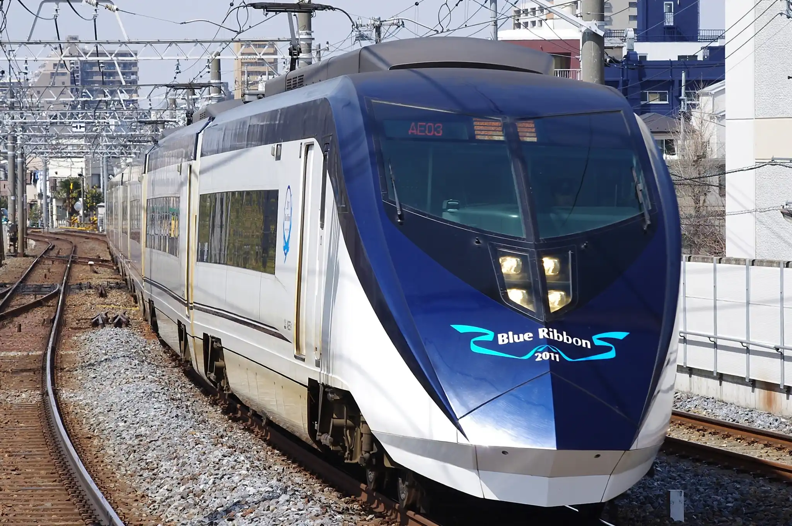
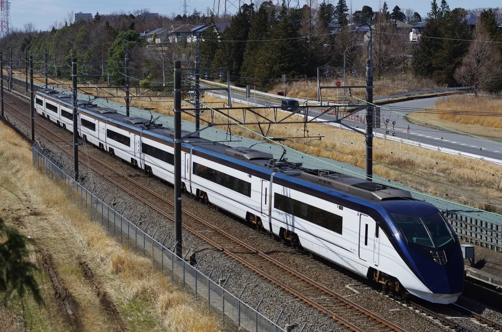
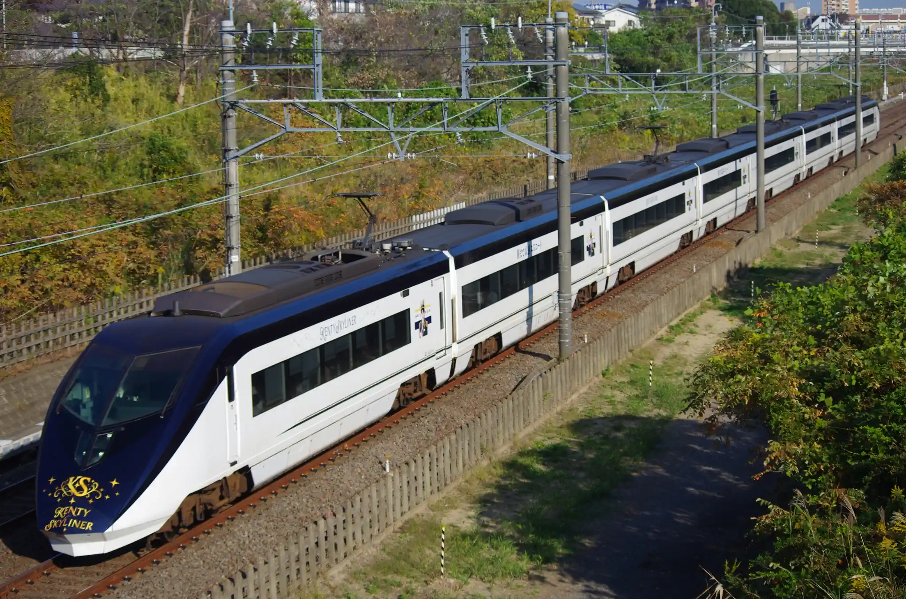
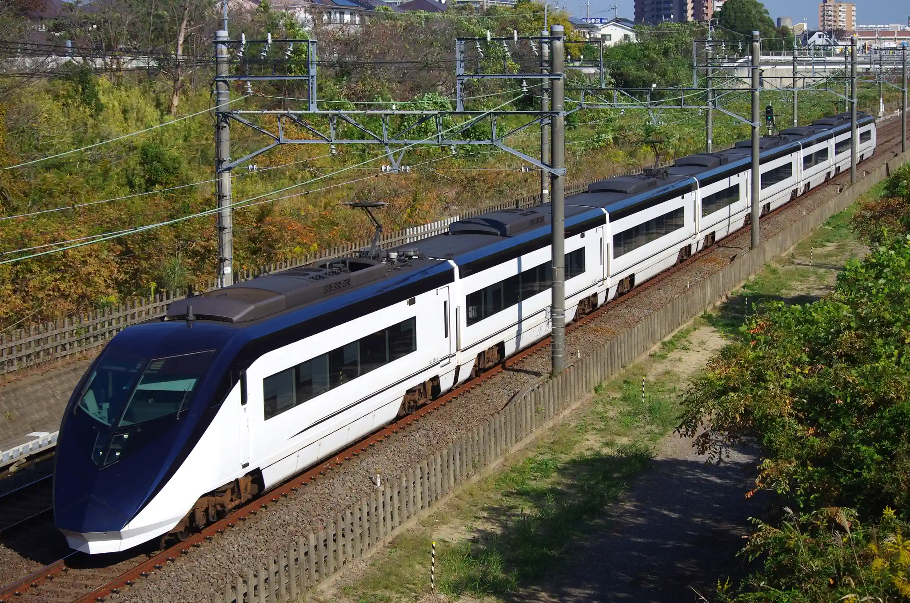
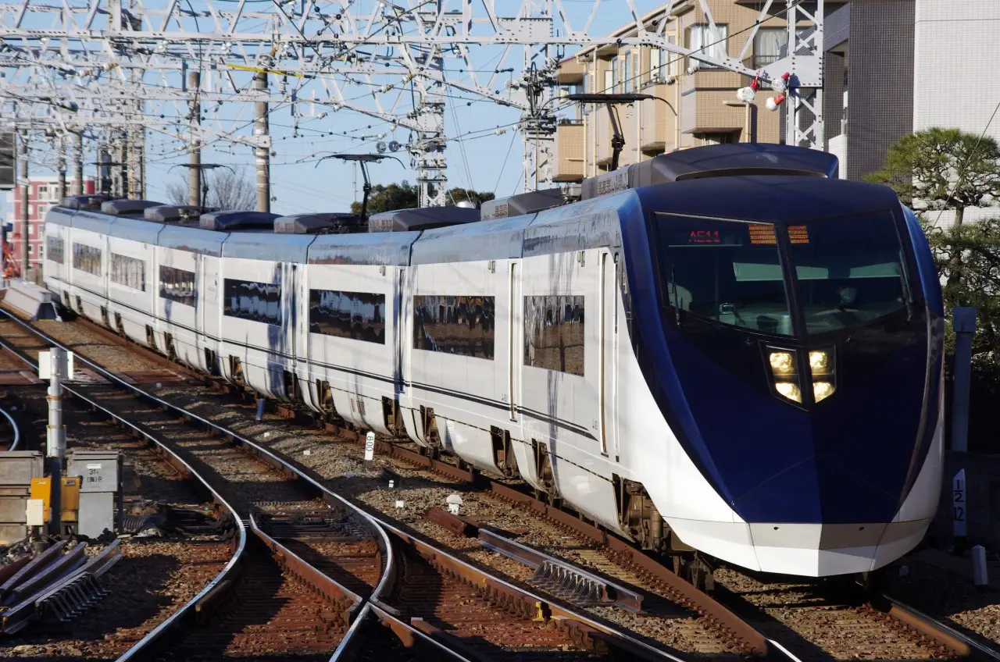
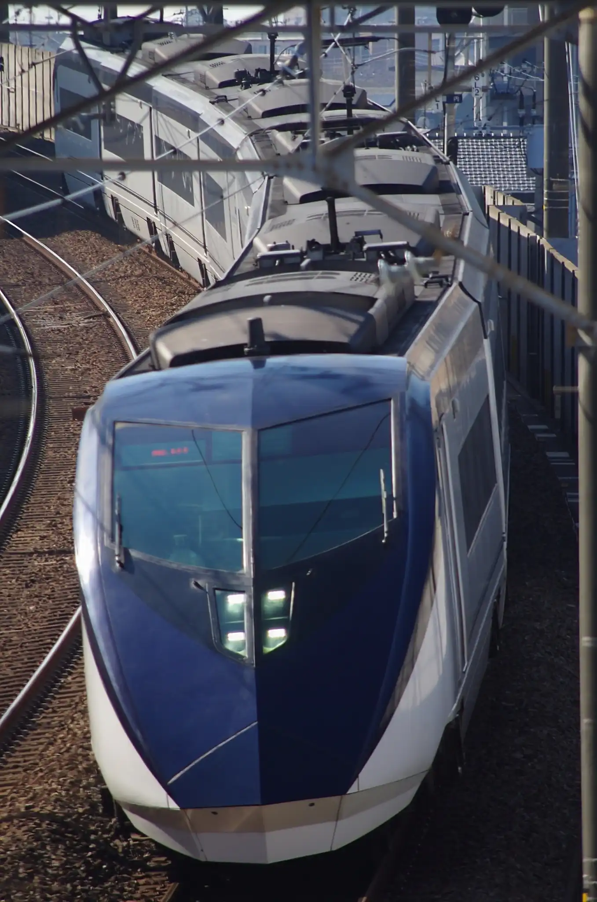
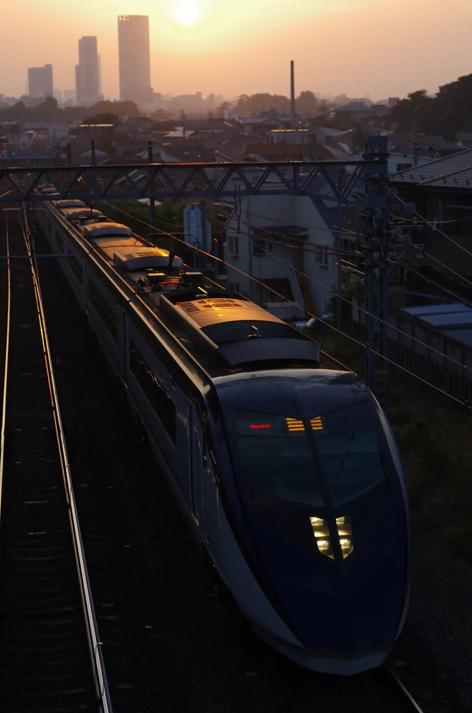
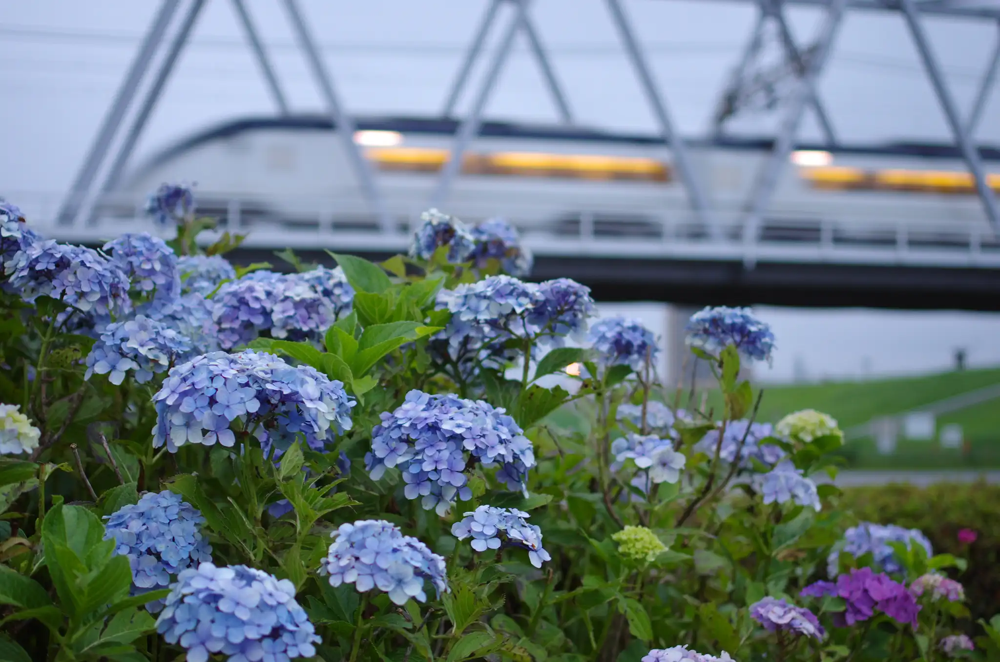

Tweet 京成電鉄AE形 2010年、成田スカイアクセス開業と共に新型京成スカイライナーとして登場した。在来線最速の160km/hでの運転が可能となっている。スカイライナーの他、京成本線を走るモーニングライナー・イブニングライナーとしても運転されている。  AE3編成(ブルーリボン賞受賞記念エンブレム) @千住大橋 (2012/03/20)  AE3編成 @白井-小室 (2017/03/16)  AE4編成(KENTY SLYLINER) @西白井-新鎌ヶ谷 (2023/11/03)  AE6編成 @西白井-新鎌ヶ谷 (2023/11/03)  AE11編成 @京成高砂 (2012/01/27)  @東松戸-松飛台 (2024/01/31)  イブニングライナー @京成中山-東中山 (2014/05/30)  紫陽花と江戸川橋梁を渡るイブニングライナー @江戸川-国府台 (2022/06/22) Tweet